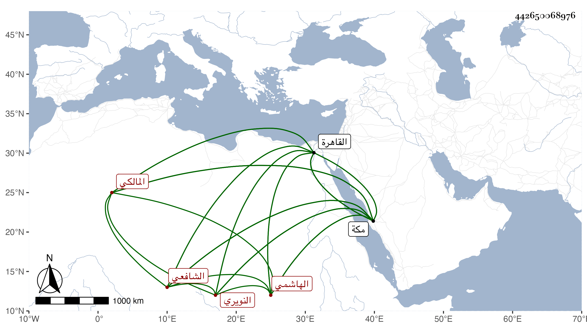

0902Sakhawi.DawLamic.ITO20230111-ara1.EIS1600.442650068976
Biography ID: 442650068976
إبراهيم بن العز محمد بن أحمد بن أبي الفضل محمد بن أحمد بن عبد العزيز الرضي أبو حامد بن العز بن المحب الهاشمي النويري المالكي الشافعي أخو إسماعيل الآتي . ولد في سنة سبع وتسعين وسبعمائة بمكة ونشأ بها فحفظ القرآن والتنبيه والمنهاج الأصلي وألفية ابن مالك وغيرها وسمع على ابن صديق والزين المراغي والشمس محمد بن محمد بن أحمد بن المحب المقدسي وأجاز له البلقيني وابن الملقن والعراقي والهيتمي والتنوخي وآخرون منهم ابن الذهبي وابن العلائي وأقبل على الاشتغال في الفقه والنحو والصرف فحصل طرفا وقدم القاهرة وأخذ عن أعيانها وكتب بخطه كتبا وكان خطه صالحا مع خير وديانة وعفاف ورغبة في العبادة بحيث قرأ في ركعة إلى آخر يوسف فيما أخبر به أبوه وناب في الخطابة بالمسجد الحرام مرة واحدة فحمدت خطابته وصلاته . ومات في حياة أبيه بالقاهرة في الطاعون في ربيع الأول ظنا سنة تسع عشرة وجاء نعيه إلى مكة فكثر الأسف عليه وسنه إحدى وعشرون سنة وسبعة أشهر وأيام يسيرة رحمهما الله وعوضهما الجنة . ذكره الفاسي في تاريخ مكة .
